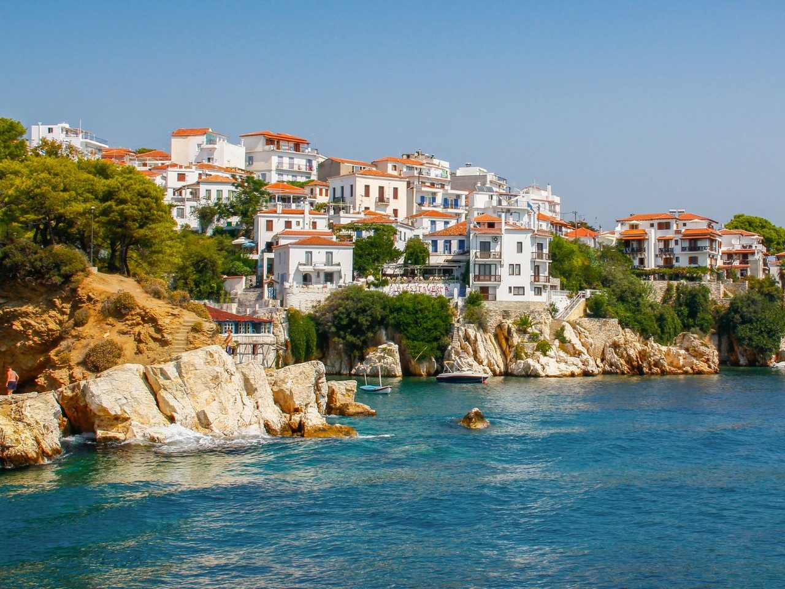

Production
Most of the outdoor scenes were filmed on location at the small Greek island of Skopelos, in Thessaly (during August 29-September 2007), and the seaside hamlet of Damouchari in the Pelion area of Greece. On Skopelos, Kastani beach on the south west coast was the film's main location site. The producers built a beach bar and jetty along the beach, but removed both set pieces after production wrapped. A complete set for Donna's Greek villa was built at the 007 stage at Pinewood Studios and most of the film was shot there. Real trees were utilised for the set, watered daily through an automated watering system and given access to daylight in order to keep them growing. The part of the film where Brosnan's character, Sam, leaves his New York office to go to the Greek Island was actually filmed at the Lloyd's building on Lime Street in the City of London. He dashes down the escalators and through the porte-cochere, where yellow cabs and actors representing New York mounted police were used for verisimilitude. The Fernando, Bill Anderson's yacht (actually a ketch) in the film was the Tai-Mo-Shan built in 1934 by H. S. Rouse at the Hong Kong and Whampoa dockyards. Meryl Streep took opera singing lessons as a child, and as an adult, she previously sang in several films, including Postcards from the Edge, Silkwood, Death Becomes Her, and A Prairie Home Companion. She was a fan of the stage show Mamma Mia! after seeing it on Broadway in September 2001, when she found the show to be an affirmation of life in the midst of the destruction of 9/11.